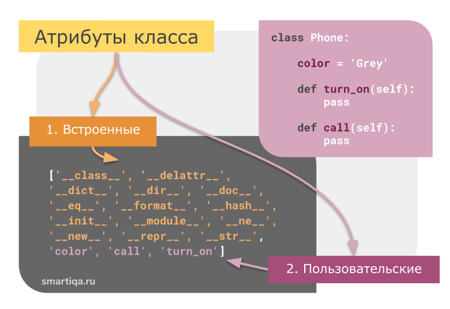

| Тема 2. Атрибуты класса в Python. Режимы доступа public, private, protected. Сеттеры и геттеры. | |||||||||||||||||||||||||||||
| Назад | |||||||||||||||||||||||||||||
|
На прошлых занятиях мы научились с вами создавать экземпляры классов и объявлять в них атрибуты и методы. Пришла пора сделать следующий шаг и познакомиться с механизмом ограничения доступа к данным и методам класса извне. Это основа механизма инкапсуляции. Давайте предположим, что мы описываем класс представления точки на плоскости: Когда создается экземпляр этого класса: то имеется полный доступ ко всем его локальным атрибутам: а, значит, их всегда можно изменить через ссылку pt: и присвоить любые значения, в том числе и недопустимые (например, строку). Атрибуты класса в Python. Все атрибуты можно разделить на 2 группы:
 Так вот, чтобы указать программисту (пользователю класса), чтобы он не обращался напрямую к атрибутам, их следует делать «закрытыми». В Python возможны следующие варианты доступа к данным:
Встроенные атрибуты Называть данную группу атрибутов встроенными - это своего рода условность, и сейчас мы объясним почему. Суть в том, что на самом деле все классы в Python (начиная с 3-й версии) имеют один общий родительский класс - object. Это значит, что когда вы создаете новый класс, вы неявно наследуете его от класса object, и потому свежесозданный класс наследует его атрибуты. Именно их мы и называем встроенными(служебными). Вот некоторые из них(заметьте, что в списке есть как поля, так и методы):
В теории ООП конструктор класса - это специальный блок инструкций, который вызывается при создании объекта. При работе с питоном может возникнуть мнение, что метод __init__(self) -
это и есть конструктор, но это не совсем так. На самом деле, при создании объекта в Python вызывается метод __new__(cls, *args, **kwargs) и именно он является конструктором класса. Часто при работе с объектами в Python возникает потребность в представлении объектов в виде строк. Это может быть полезно для отладки, логирования или просто для вывода информации о объекте. В Python для этого существуют два специальных метода: __str__ и __repr__.
Важно отметить, что если для класса определен только метод __repr__, то он будет использован и при вызове str(). Однако, если определены оба метода, __str__ и __repr__, то при вызове str() будет использован __str__, а при вызове repr() — __repr__. Итак, главное отличие между __str__ и __repr__ в Python заключается в их назначении: __str__ предназначен для создания «приятного» для чтения представления объекта, в то время как __repr__ предназначен для создания «официального» представления, которое может быть использовано для воссоздания объекта. class Person:
r=0
name='Иванов'
age = 16
__doc__ ='Документация класса.'
def __init__(self, name, age):
self.name = name
self.age = age
def __str__(self):
return f'Метод __str__ класса Person name={self.name} age={self.age})'
def __repr__(self):
return f'Метод __repr__ класса Person (name={self.name!r}, age={self.age!r})'
def main():
person = Person('ssss',44)
s = person.__dir__() #в пустом классе есть только встроенные атрибуты
print(s)
print()
#__str__(self) Возвращает строковое представление объекта.
print(person)
#__repr__ метод возвращает строку, описывающую точное, однозначное представление объекта.
print(repr(person))
print()
#person.__doc__ ='kkkkkkkkkkkkkkkkkkk'
d = person.__doc__
print(d)
Пользовательские атрибуты
Это атрибуты, которые непосредственно составляют основной
функционал класса. Если служебные атрибуты наследуются от
базового класса object, то пользовательские - пишутся программистом во время реализации начинки класса и дальнейшей работы с ним.
То мы получим вот такой список атрибутов:
Как видим, в нем есть только встроенные атрибуты, которые наш класс по-умолчанию унаследовал от базового класса object. А теперь добавим ему функционала: Итого по атрибутам класса
Давайте разберем это подробнее. До сих пор все атрибуты в классе, либо в экземплярах класса мы делали публичными, то есть, не использовали одно или два подчеркивания перед их именами. Давайте посмотрим, что изменится, если добавить одно подчеркивание перед локальными атрибутами x и y: Так реализуется режим protected в Python. Если кто из вас программирует на других языках, например, С++ или Java, то сейчас ожидают, что мы не сможем обращаться к свойствам _x и _y через ссылку pt, так как они определены как защищенные (protected). Давайте проверим и попробуем вывести их в консоль: Как видим, никаких ошибок не возникает и все работает так, словно это публичные свойства экземпляра класса. Но тогда зачем нам писать это нижнее подчеркивание, если оно не играет никакой роли? Одна роль у этого префикса все-таки есть: нижнее подчеркивание должно предостерегать программиста от использования этого свойства вне класса. Впоследствии это может стать причиной непредвиденных ошибок. Например, изменится версия класса и такое свойство может перестать существовать, т.к. никто не предполагал доступа к нему извне. Так что, к таким атрибутам лучше не обращаться напрямую – одно нижнее подчеркивание указывает нам, что это внутренние, служебные переменные. Давайте теперь посмотрим, как работает режим доступа private. Пропишем у локальных свойств два подчеркивания: и также попробуем обратиться к ним напрямую: После запуска программы видим ошибку, что такие свойства не определены. Это говорит о том, что извне, через переменную pt мы не можем напрямую к ним обращаться. А вот внутри класса доступ к ним открыт. Пропишем метод set_coord, который будет менять локальные свойства __x и __y экземпляра класса: А ниже, вызовем его для экземпляра pt: Как видите, никаких ошибок не возникает и чтобы убедиться в изменении локальных приватных свойств, определим еще один метод: И вызовем его: После запуска программы видим измененные координаты точки. В результате, мы с вами определили два вспомогательных метода: set_coord и get_coord, через которые предполагается работа с защищенными данными класса. Такие методы в ООП называются сеттерами и геттерами или еще интерфейсными методами. Зачем понадобилось в классах создавать приватные атрибуты да еще и определять дополнительно методы для работы с ними извне. Я об этом уже говорил на самом первом занятии по ООП, когда объяснял принцип инкапсуляции. Но, скажу еще раз. Класс в ООП следует воспринимать как некое единое целое, и чтобы случайно или намеренно не нарушить целостность работы алгоритма внутри этого класса, то следует взаимодействовать с ним только через публичные свойства и методы. В этом суть принципа инкапсуляции. Опять же, представьте автомобиль, в котором согласованно работают тысячи узлов. А управление им предполагается только через разрешенные интерфейсы: руль, коробка передач, педали газа и тормоза и т.п. Если во время движения вмешиваться напрямую в его узлы, например, будем на ходу спускать воздух из шин, то, наверное, ничего хорошего не получится. То же самое, можно сказать и о программисте, который намеренно обходит запрет и обращается к скрытым атрибутам класса напрямую, а не через сеттеры или геттеры. Так делать не нужно. Назначение интерфейсных методов не только передавать значения между приватными атрибутами класса, но и проверять их корректность. Например, в нашем случае координаты должны быть числами. Поэтому, прежде чем обновлять значения переменных, следует проверить их тип данных. Для этого можно воспользоваться функцией type и записать сеттер следующим образом: Здесь мы проверяем, что обе переданные переменные x и y должны иметь тип int или float и только после этого приватным атрибутам экземпляра класса присваиваются новые значения. Иначе, генерируется исключение ValueError. Об исключениях мы с вами еще будем говорить. Теперь, если передавать недопустимые значения координат: то увидим ошибку ValueError. Продолжим совершенствовать наш класс Point и добавим приватный метод для проверки корректности координат. Приватный метод объявляется также как и приватная переменная – двумя подчеркиваниями и, кроме того, сделаем его методом уровня класса (о декораторе classmethod мы с вами говорили на предыдущем занятии): Соответственно, в сеттере и в инициализаторе воспользуемся этим методом: Запускаем программу и видим, что все работает. Но, при этом, доступа к этому методу извне нет, он приватный. На самом деле, в Python можно относительно легко обратиться и к приватным атрибутам извне. Если распечатать все атрибуты экземпляра: то среди прочих мы увидим, следующие: '_Point__x', '_Point__y' Это и есть кодовые имена приватных атрибутов, к которым мы можем обратиться через ссылку pt: и менять их. Однако, так делать крайне не рекомендуется и двойное подчеркивание должно сигнализировать программисту, что работать с такими атрибутами нужно только через разрешенные интерфейсные методы. Иначе, возможны непредвиденные ошибки. Если у вас появилась необходимость лучше защитить методы класса от доступа извне, то это можно сделать с помощью модуля accessify. Для его установки нужно выполнить команду: pip install accessify И, затем, импортировать из него два декоратора: Далее, нужный декоратор просто применяем к методу и он становится либо приватным (private), либо защищенным (protected): Все, теперь мы можем обратиться к check_value только внутри класса, но не извне: Я, думаю, из этого занятия вам стало понятно, как реализуются режимы доступа public, protected и private, а также, как правильно обращаться к скрытым атрибутам через интерфейсные методы – сеттеры и геттеры.
|
|||||||||||||||||||||||||||||
| Конспект подготовлен Бакулиным А. М. 2012 год. | |||||||||||||||||||||||||||||